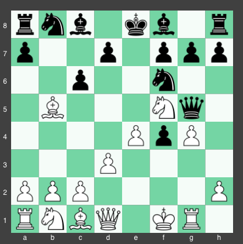
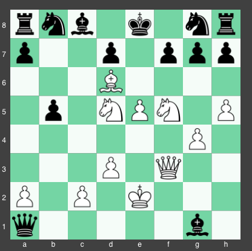
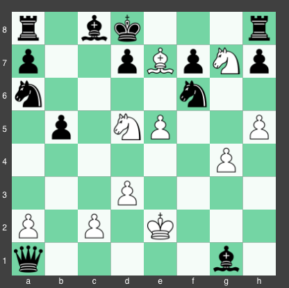
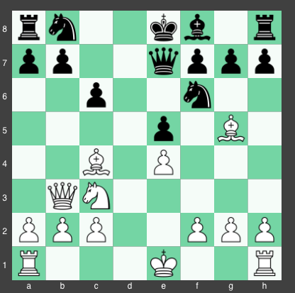
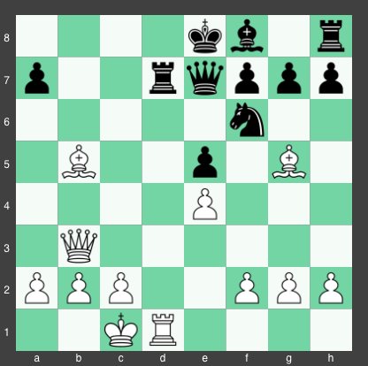
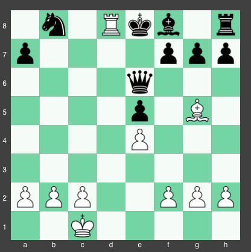
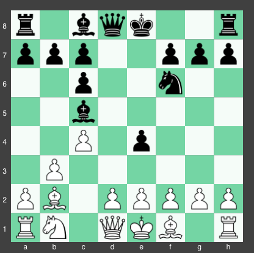
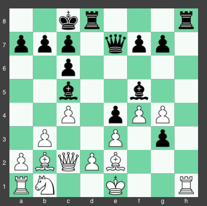
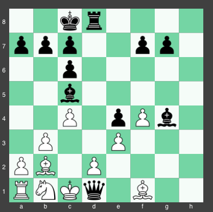

They say that in order to be the best, you must first study the best, and nowhere is that more true than in chess. Below are 3 famous games played by grandmasters. Review these games, and take note of the strategies employed by the grandmasters. If you would like to jump to a particular game, click one of the links below.
The Immortal Game The Opera Game The "When Pawns Attack" GameThe Immortal Game:
Adolf Anderssen (white) vs. Lionel Kieseritzky (black), 1851From start to finish, this game demonstrates that material count isn't the only thing that matters. As GM Yasser Seirwan says, "It's not what's off the board that counts, but rather, what's on the board. If you're going to get checkmated on the next move, then being up a queen is of no help to you."
Certainly, Kierseritzky could have used that advice before this game!
In standard chess algebraic notation, the game proceeded as thus: 1. e4 e5 2. f4 exf4 3. Bc4 Qh4+ 4. Kf1 b5 5 Bxb5 Nf6 6. Nf3 Qh6 7. d3 Nh5 8. Nh4 Qg5 9. Nf5 c6 10. g4 Nf6 11. Rg1. A diagram of the game at this point is shown below.
Black to Move:
In this position, black can simply take white's bishop on their move. What is Anderssen thinking? In fact, the next move of the game is indeed 11...cxb5. However, white responds with a killer move: 12. h4! This move forces the queen to retreat and decreases the number of safe squares the queen has left to go to.
The game continues with 12... Qg6 13. h5 Qg5 14. Qf3. At this point, Kierseritzky is really in trouble. On the next move, white can play Bxf4 to win the queen, or e5, creating a discovered attack with his queen on the rook and attacking the knight simultaneously. In order to counter this threat, black plays 14...Ng8, returning his knight to its starting square and increasing Anderssen's lead in development. White responds 15. Bxf4, putting more pressure on the queen. The game continues 15...Qf6 16. Nc3 Bc5 17. Nd5.
With his queen being attacked, black decides to go on the offensive. Play continues with 17... Qxb2. 18. Bd6. What is going on here? Anderssen is going to lose his rook on the next move! Play continues 18... Bxg1 19. e5. Incredible! After losing his rook, white now offers black his second rook for free! However, this capture will in fact come with a cost for black, as the e5 pawn is now blocking the queen off from returning to help defend the black king, allowing white's attack on the king to continue
After 19... Qxa1+ white simply responds 20. Ke2. White has now lost almost all of his pieces without winning any pieces in compensation. How can Anderssen possibly win this game?
A Dire Situation for White:
Black replies with 20... Na6 21. Nxg7+ Kd8 22. Qf6+! Now white has offered up their queen for sacrifice too! Why on earth would a grandmaster do this? Play continues with 22...Nxf6. On this move, white now plays the stunning 23. Be7# checkmate!
Check and Mate!
Even though black had a huge lead in material, white had an even bigger lead in developing his pieces. In the end, black's two rooks and bishop were still on their starting squares, while all of white's minor pieces were coordinating to perform checkmate on the black king. It just goes to show: even if you have a commanding lead in material, that doesn't always mean that you're winning the game!
The Opera Game:
Paul Morphy (white) vs. Duke Karl (black), 1858The next game was played between Paul Morphy and Duke Karl in an operahouse while an opera was going on. Morphy and the Duke had a private box that they were playing in, but Morphy kept turning his back to the game because he wanted to see the show. Amazingly, in spite of that, Morphy played one of the greatest chess games of all time right in the middle of the opera!
The game begins with 1. e4 e5 2. Nf3 d6 3. d4 Bg4 4. dxe5 Bxf3 5. Qxf3 dxe5 6. Bc4 Nf6 7. Qb3 Qe7 8. Nc3 c6 9. Bg5!
The game up to this point:
The duke is really feeling the heat now. His knight can't move or he'll lose his queen, his bishop is blocked by his queen, and the best square to develop his other knight to (c6) is blocked by his own pawn! Oftentimes, restricting the mobility of your opponent's pieces can be a useful strategy for setting up winning positions, as Morphy will demonstrate to you later on in this game.
The game continues 9... b5 10. Nxb5 cxb5 11. Bxb5+. Morphy has now sacrificed his knight for 2 pawns and a check of the black king. The duke blocks the check with 11. Nbd7. White replies with a strong 12. O-O-O! This castling puts white's rook in a position to attack black's knight, which is pinned by the bishop to the king. Black needs to act fast to get out of this. Black responds 12... Rd8 hoping to defend his knight, but white takes it anyway on the next move with 13.Rxd7. Play continues with 13...Rxd7 14. Rd1, with white now attacking black's pinned rook with his other rook.
The game after 14. Rd1:
Black replies 14. Qe6. Morphy answers this with 15. Bxd7+. After 15... Nxd7, white plays 16. Qb8+! Morphy is sacrificing his queen! There'd better be a good payoff for this to be worth it. There is! 16...Nxb8 is followed by 17.Rd8# checkmate!
The Duke's Demise:
When you can hinder your opponent's development and control the center, you can rack up a huge amount of pressure on your opponent's king in a very short amount of time. If this can happen, it will set you up for winning tactics, winning material, and ultimately, winning endgames; and after all, isn't that what chess is all about?
The "When Pawns Attack" Game:
Bent Larsen (white) vs. Boris Spassky (black), 1970Our final game shows how quickly things can go wrong when you allow your opponent to control the center and choose to keep all of your pieces on the side of the board. The game begins with 1. b3 e5 2. Bb2 Nc6 3. c4 Nf6 4. Nf3 e4 5. Nd4 Bc5 6. Nxc6 dxc6.
The game after 6... dxc6:
As you can see, black now has commanding control of the center: he has his bishop and knight both occupying key squares in the middle of the board, and also has 2 pawns advanced in the center. Larsen on the other hand (playing as white) has only developed his bishop, which is on the side of the board. Additionally, his pawns are all off to the side as well, and not exerting much pressure on the center. Let's see how Spassky exploited this weak opening to wreack havoc on his opponent!
Play continued with 7. e3 Bf5 8. Qc2 Qe7 9. Be2 O-O-O 10. f4 Ng4 11. g3 h5 12 h3 h4 13. hxg4 hxg3.
The position after 13...hxg3:
Spassky has just sacrificed his knight for a pawn. Although this may at first glance seem like a bad trade, you have to keep in mind that a piece is only valuable to the extent that it can threaten your opponent. A rook that is boxed in by the king and can't move is worth less than a bishop which is active and is attacking your opponent's king. In this case, Spassky trades his knight which isn't doing very much for a pawn which is close to being promoted to a queen, and is mounting pressure on the uncastled king. Additionally, Spassky's pawn capture creates a discovered attack by his rook on the white rook, which white has to respond to before he can capture black's hanging bishop.
Play continues with 14. Rg1 Rh1 15. Rxh1 g2 16. Rf1. After black sacrificed his rook for no apparent reason, white now seems to be doing the same. In reality, the rook sacrifice by black enabled the pawn advance, and if white responded with rook to g1, it would be met with Qh4+, followed by Qh1. If white takes the queen, black can take the rook with his pawn while promoting it to a queen, with checkmate to follow in 2 moves.
Spassky continued his pawn-led assault with 16...Qh4+! 17. Kd1 gxf1 = Q+ at which point white resigned, since 18. Bxf1 Bxg4+ 19. Kc1 Qe1+ 20. Qd1 Qxd1# is checkmate. It just goes to show: you should never underestimate the power of a passed pawn to devastate your army. And remember: always castle as soon as you can to prevent the king from being sandwiched into checkmate like this!
Spassky's Triumph:
When you study enough master games, your play will start to imitate tactics from the games, so be sure to review all of the games on this page extensively!
© Vygovsky enterprises | www.ChessExpert.com | 1999-2018